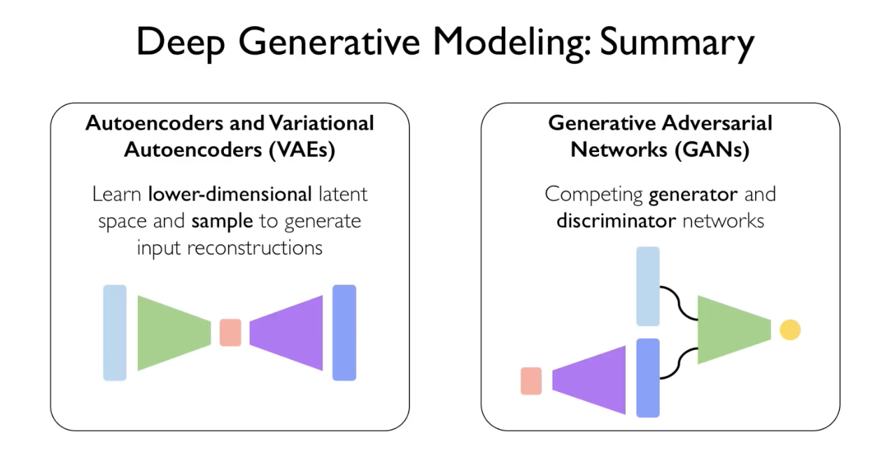
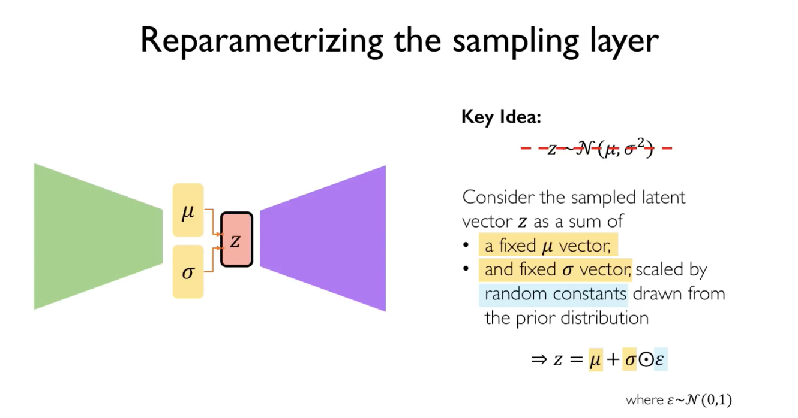

Deep generative models
Supervised learning: learn function to map x to y.
Unsupervised learning: learn hidden or underlying structure of data
Generative modelling: learn a model that represents distribution of data
Main tasks:
- Density estimation
- Sample generation
Why learn generative models?
Debiasing
Outlier detection
Generative models

- Autoencoder
- VAE
- GAN
Autoencoder

Encoder learns mapping from the data x to a low-dimensional latent space z (“compressed”).
Decoder learns mapping from latent z to a reconstructed observation, x_hat.
Loss function is L(x, x_hat). It doesn’t use any labels.
Reconstruction loss forces the latent representation to capture as much information about the data as possible.
VAE

Variational autoencoder
Instead of learning a deterministic latent vector z, we learn a vector of mean and a vector std that parametrise the probability distribution for each of the latent variables





GAN
Generative Adversarial Network
Instead of explicitly modelling the density (distribution of data), we just sample to generate new instances. However, we can’t sample from complex distribution directly. Thus the solution is to sample from something simple (noise), learn a transformation to the training distribution.
Adversaries (neural networks):
- The generator turns noise into an imitation of the data
- The discriminator tries to discern between a fake generated by the generator and the true data.
Uses
Style transfer: CycleGAN
Mitigating bias through learned latent structure
- Learn latent structure using VAE.
- Estimate distribution. (How?)
- Adaptively resample data.
- Learn from fair data distribution.